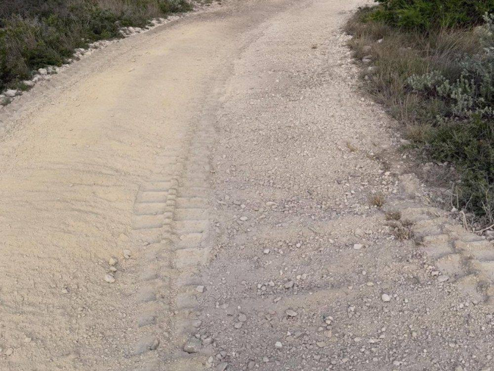

Who We Serve
Serving Spring Branch, Bulverde, New Braunfels, Canyon Lake, Boerne, San Antonio, San Marcos, the Texas Hill Country, and clients across Central Texas.
Commercial frontage has to look sharp and perform. 9 Arrow clears, grades, and preps commercial sites across Central Texas so your project breaks ground on schedule and shows well from day one.
We handle the dirty work between raw land and vertical construction — clearing, grubbing, grading, and access — coordinated to keep your timeline tight and your site clean.
A clean, well-kept commercial frontage signals quality to tenants and buyers. Our detail-driven finish makes your property show its best.

FAQs
9 Arrow handles commercial sites end to end — clearing, grubbing, grading, pad sites, and access — for retail, office, industrial, and mixed-use projects across Central Texas.
We price by the hour, day, acre, or as a fixed bid after a discovery call or site visit, so you have a clear number before we start.
Yes. We shape sites to manage runoff, correct drainage around foundations, and direct stormwater where it needs to go.
We do — from raw land to a clean, gradable, construction-ready commercial site.
Yes. We clear selectively around structures and utilities, and we can handle demolition and cleanup when needed.
It does not get better.
Tell us about your land and your timeline — you'll know the cost before we start.
Request an Estimate